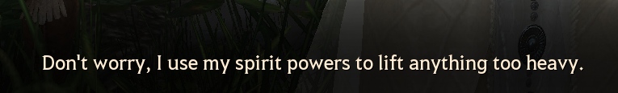
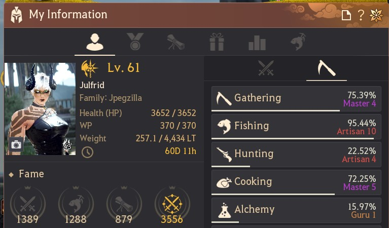
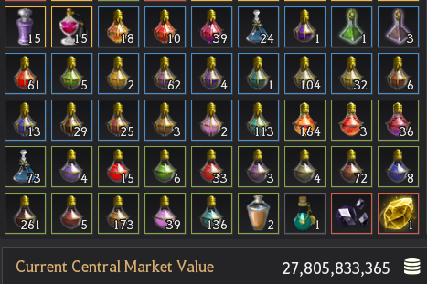
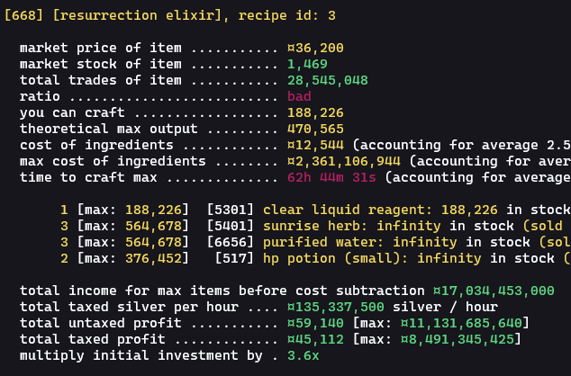
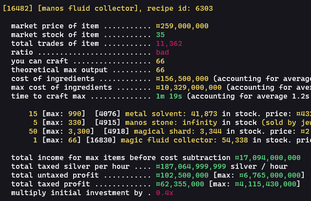

a black desert alchemist's quest for profit part two: the eternal grind.
this article has a prequel here: a black desert alchemist's quest for profit. I'm kind of assuming you have some context from reading that (or that you play black desert), so I'm not going to explain everything.
also, disclaimer: I won't be letting you in on any get-rich-quick schemes. actually, scratch that — I will: the secret to getting very rich in black desert is running in circles and gambling recklessly. there you go. now disperse!

Once again, I find myself completely addicted to black desert online. I'm back in grána and I'm still trying (unsuccessfully) to make a living from alchemy. I still have some self-imposed constraints. first: I can't gather ingredients myself (unless absolutely trivial, i.e. farming herbs). second: I can only brew with ingredients that I bought from the market or that I already had lying around.
I'm not trying to challenge myself, though. these restrictions are the result of my most prominent trait: I am incredibly lazy. I just don't feel like gathering most of the time! I just want to skip to the alchemizing.

problematically, alchemy recipes are either complicated, expensive, obscure, unprofitable, useless, overproduced, or some combination of the six. and when I say 'unprofitable', I mean unprofitable according to my ridiculous restrictions.
to my great despair, I'm a programmer in real life, not an alchemist. so I programmed the computer to analyze alchemy recipes for me.
here are the fruits of my labor: a tool called bdo-alchemy-profits! it searches the central market and bdocodex, and then compiles a list of profitable alchemy recipes for me to try. I think this is what my character would have done if she'd access to a computer.
this is technically a tool I made a couple of years ago in node.js. my extremely boring current job ('fullstack' engineer, mostly backend meteor stuff) is making me hate javascript with a fiery passion — but I'm still in love with ruby. ruby is cute.
I ported the entire thing in a week or so. now it's even snazzier than it was before. the code itself leaves much to be desired, but hey, at least it's not javascript.
I've added better caching, improved the network logic, and made a bunch of additional features. the tool is now much more efficient — you can research hundreds and hundreds of items in a few minutes! it only takes me about ten to fifteen minutes to analyze the profitability of around eight hundred recipes. I invite you to try it! the instructions are pretty clear, but I concede it's not super accessible if you don't know how to use a computer very well. I sincerely apologize for that, but I just haven't had time to make it a one-click type of experience. anyway...
the state of alchemy
it's just not interesting right now! I decided to take a much, much deeper dive into the alchemicoeconomics (how do you like that?) this time and actually look at why people were buying which items. for example, when I wrote my original post I didn't really know that I should care what made the average circle-runner buy the consumables they bought, but now I'm actually trying to make money. therefore, I care now. on top of that, pearl abyss reworked a lot of the draughts / elixirs / other potions and added some new things called harmony draughts which have similar effects to traditional draught rotations and have made a lot of the old draughts less relevant.

a lot of grinders these days seem to have their rotation formulas locked down. whether they're just raw dogging it, having their fairy forcefeed them every few minutes, or just yamming down a cron meal or whatever, I'll tell you what they're not doing — buying huge amounts of elixirs in massive variety. or at least, they're not buying them quickly enough for my greed to be satiated. this analysis, as you might have noticed, still isn't even taking into account things like the ridiculous amount of competition in the alchemy market.
the point I'm really trying to make is this: it's difficult to be a pure alchemist, or even primarily play black desert as an alchemist. you probably already know that if you've played as much as me, but if you just want to mainly craft interesting potions (or try to discover new recipes and stuff) it's mostly going to be a money sink. don't get me wrong though: I'm not ready to start saying stuff like 'argh, alchemy is dead content! pearl abyss pls buff!!'. it's just not passive, hugely rewarding, or low-effort like other methods of making money in this game.
modern market alchemy
I decided to account for a lot of alchemicoeconomic things in the new code, so I've added two important metrics (among other things): stock / trade count ratio and crafting time estimation. those two things alone allow me to look at a recipe and determine whether or not it's worth making. if there aren't many trades of an item compared to the amount in stock, or if it'll take me two days to make enough volume to profit, then I can just gloss over the recipe entirely. example:

I can take a look at this handy color-coded recipe output and immediately disregard it. things like that save me some time, but the tool really only enhances your own alchemy knowledge, same as it did before.
so what is profitable now? what about harmony draughts? those are quite good, right? actually, despite the benefits, harmony draughts are preeeetty low volume. the listings mostly just sit on the market and the trade counts are only in the single millions. that's just one example, but there are many such cases. thus is the reality of market alchemy.
buy something → ????? → profit
first of all, there are only two consistently profitable purely alchemical recipes as far as I can tell: pure powder reagent and clear liquid reagent. you can make these till the cows come home and practically always have buyers — if you're patient. what the high level alchemists / other buyers are doing with them is anyone's guess, but maybe they actually do gathering and therefore have something worth making with reagents. you can only list about twenty thousand of these on the central market at a time. they'll take a long time to move.
side note: if you want to continue doing reagents, of course, you have to obtain alchemy tools. I've found the best way to pay the membership fee of alchemy (repair kits / alchemy tools) is to just do your crates every day and get alchemy seals, which you can exchange for alchemy tools, which you can exchange for alchemy repair tools, which you can use to repair your alchemy tool indefinitely. pearl abyss recently made it so you can do cooking boxes and alchemy boxes on the same day. at around four hundred contribution points, you should be able to just infinitely repair one alchemy tool every day unless you're just doing an insane amount of alchemy (ten thousand crafts or more).
what would really help is setting up a node empire, but I just haven't got around to calculating how much I can make with worker-harvested materials standing in for some that I'd usually just purchase. the tool I made does have an option to pass in a list of item IDs to consider as 'free', though, so keep that in mind if your workers have been stockpiling powders and saps for years. mine haven't, because I offer them a strong work / life balance, among many other things.
oh, what about the o'draxxian workers? um...we don't need to talk about them.
how about not doing alchemy?
the tool does consistently find not-strictly-alchemy recipes you can make that are most definitely profitable, including things like processing recipes. unfortunately, this is where a majority of the actually profitable recipes are. still pretty cool though!

the above is an example of one such recipe. crafting life skill gear is pretty much always profitable, as far as I know. how ironic — facilitating other people's lifeskilling is profitable, but actually doing my own lifeskill is not that profitable. ha.
conclusion
I know this was quite short. it's because in the end, I didn't learn much new information. whatever rich alchemists are making is still unknown to me, cooking still seems better, alchemy crates are still unprofitable, market alchemy is a stupid idea, you can make more money just by not playing the game (fishing), so on and so forth.
there may be some updates coming that will change everything. at least a little bit!
but alchemy is just about the love of the craft anyway, so who really cares? ∎
currently listening to:
- Sunrise=Sunset by MIGMA SHELTER
- 魔神 ～魔神セフィロト討滅戦～ by 祖堅正慶
- CELL DIVISION by OCEAN GROVE
- wa･su･re･na･i･ka･ra by GACKT
- TAKING THEM DOWN by HYDE